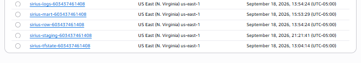
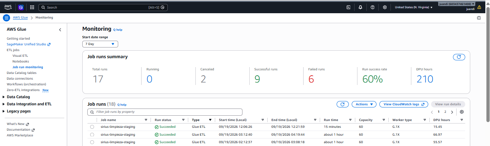
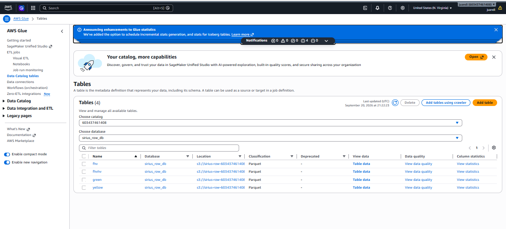
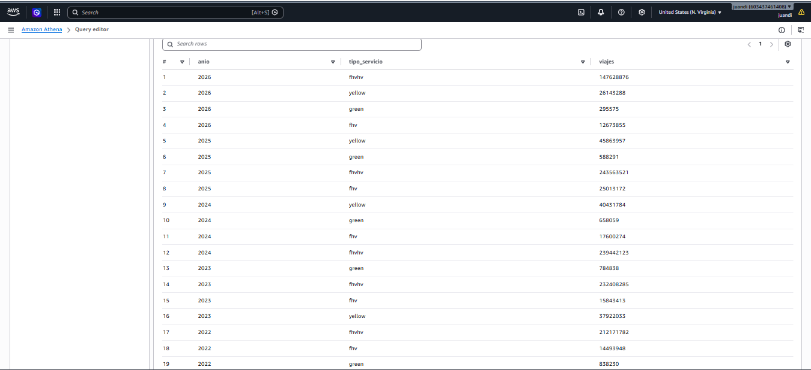
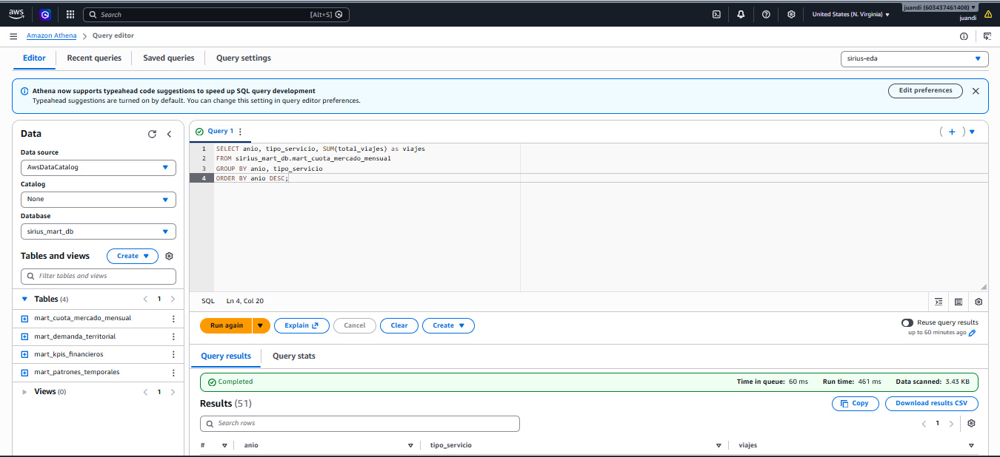
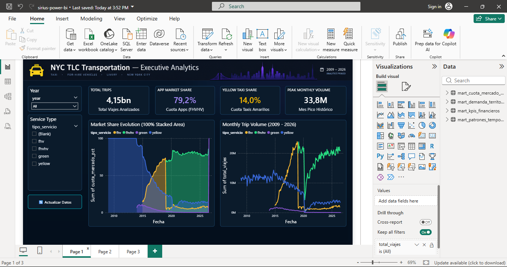
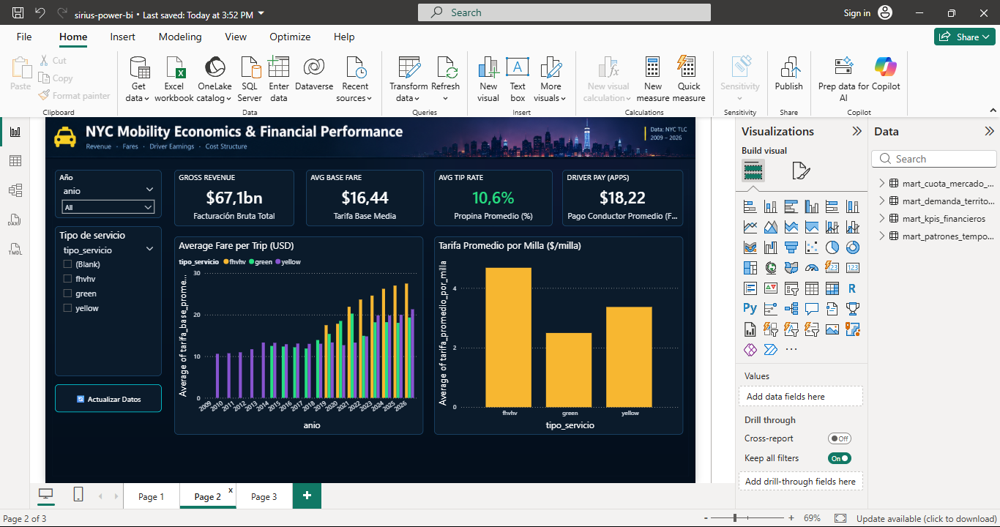
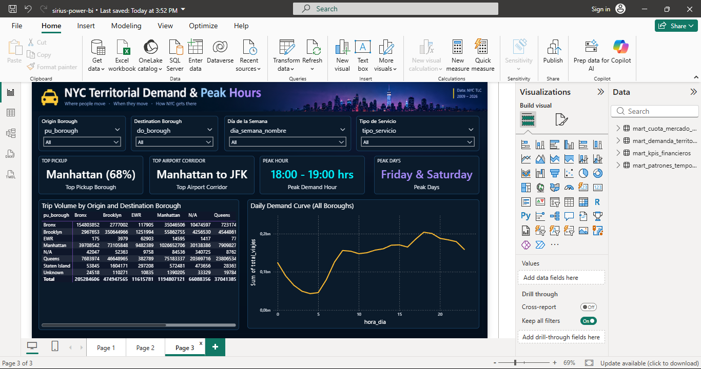
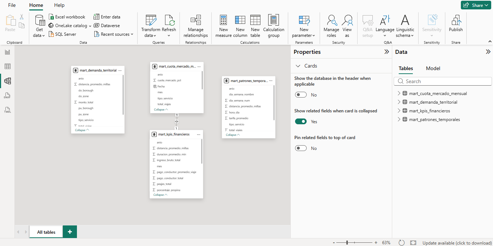

Sirius — Modern Data Lakehouse Serverless en AWS (NYC TLC)
Modern Data Lakehouse Serverless aprovisionado al 100% como Código con Terraform, procesando el histórico completo de 18 años de la Comisión de Taxis y Limusinas de Nueva York (~4,424M de viajes) mediante Apache Spark en AWS Glue 4.0, Amazon Athena y Power BI.
¿Qué es el Proyecto Sirius?
Sirius nace para resolver la ingesta, limpieza, modelado y análisis a escala masiva de más de 18 años de datos (2009 – 2026) del dataset público más grande del mundo en movilidad urbana: el registro de viajes de NYC TLC (590 archivos Parquet mensuales, 75.1 GB en crudo).
Proyecto individual, implementado de extremo a extremo: desde la infraestructura con Terraform, el diseño del pipeline GitOps con autenticación OIDC, hasta la optimización distribuida en PySpark y la capa de materialización de Data Marts analíticos.
Parquet Snappy, deduplicado, safe cast y enriquecido
Mart (Gold)
388.8 MB (4 Marts)
Amazon Athena v3 CTAS
Agregaciones estratégicas para consumo analítico en BI
1. Ingesta Serverless & S3 Row
Patrón de ingesta desacoplado y asíncrono diseñado para escanear y descargar periódicamente archivos Parquet desde el CDN de NYC TLC hacia la capa Row de S3.
Desafíos de la Descarga Directa
Descargar 590 archivos Parquet mensuales (algunos superando los 250 MB por mes) mediante una función Lambda monolítica es inviable debido a restricciones de tiempo (timeout de 15 minutos) y riesgo de saturación de memoria RAM.
Arquitectura Asíncrona con SQS y DLQ
Amazon EventBridge (Disparador Mensual): Dispara la sincronización periódica mediante una regla cron.
Lambda Detectora: Ejecuta peticiones HTTP HEAD de bajo impacto contra CloudFront de NYC TLC para verificar qué meses han sido publicados y los contrasta con las particiones existentes en s3://sirius-row-.../row/.
Amazon SQS + Dead Letter Queue: Si detecta meses faltantes, encola mensajes con metadatos estructurados. Si la descarga falla tras 3 intentos, la DLQ aísla el mensaje para auditoría sin frenar el flujo.
Lambda Descarga: Con batch_size = 1, consume el mensaje de SQS y transmite el archivo mediante streaming de buffers directamente a S3 sin persistir en disco temporal efímero.
# Estructura del prefijo particionado en Capa Row (S3)
s3://sirius-row-603437461408/row/
├── yellow/anio=2026/mes=01/yellow_tripdata_2026-01.parquet
├── green/anio=2026/mes=01/green_tripdata_2026-01.parquet
├── fhvhv/anio=2026/mes=01/fhvhv_tripdata_2026-01.parquet
└── fhv/anio=2026/mes=01/fhv_tripdata_2026-01.parquet
Evidencia de Infraestructura en Amazon S3

Amazon S3 Lakehouse: Despliegue de los buckets de almacenamiento de la arquitectura Medallion (Raw/Bronze, Staging/Silver, Mart/Gold).
2. CI/CD, GitOps con OIDC y DevSecOps
Pipeline de entrega continua con GitHub Actions autenticado mediante OpenID Connect (OIDC), incorporando escaneos de seguridad estática, calidad y auditoría continua de costos.
Autenticación Passwordless mediante OIDC
Para eliminar el riesgo de credenciales estáticas de larga duración en GitHub Secrets, GitHub Actions asume de forma temporal el rol IAM terraform-sirius validando el token criptográfico emitido por token.actions.githubusercontent.com.
Etapas del Pipeline en Pull Requests
Herramienta
Capa Evaluada
Acción / Quality Gate
terraform fmt
Formato HCL
Verifica indentación y estilo canónico del código.
TFLint
Sintaxis IaC
Inspecciona errores en variables y recursos del provider AWS.
Checkov
Seguridad Cloud
Escanea políticas CIS Benchmark en políticas IAM, S3 y Glue.
SonarCloud
Calidad de Código
Evalúa mantenibilidad, bugs y code smells en scripts Python.
Infracost
FinOps Shift-Left
Estima la variación del costo mensual en el PR antes de hacer merge.
Aislamiento del Backend Remoto & State Locking
El archivo terraform.tfstate se resguarda en un bucket S3 dedicado con SSE-S3 forzado, versionado activo y política de acceso restringida al rol OIDC terraform-sirius. Para evitar condiciones de carrera y colisiones concurrentes en el pipeline, el bloqueo de estado (State Locking) se gestiona a nivel de infraestructura mediante una tabla de Amazon DynamoDB con clave LockID.
1. AWS Glue 4.0 & Optimización Multihilo
Procesamiento distribuido con PySpark 4.0 en AWS Glue, superando la subutilización del clúster con multithreading en el driver y acelerando el throughput a ~875k filas/seg.
El Cuello de Botella del Driver Monohilo
Al procesar 590 archivos Parquet en un clúster de 60 Workers G.1X, leer mes a mes secuencialmente provocaba que el 95% de los núcleos estuvieran desocupados esperando la planificación del driver. Cada mes tardaba 2.8 minutos, proyectando 27 horas de clúster.
Implementación de ThreadPoolExecutor en PySpark
Se incorporó paralelismo a nivel del driver mediante concurrent.futures.ThreadPoolExecutor(max_workers=4), permitiendo encolar y procesar hasta 4 meses concurrentemente en el clúster distribuido:
# Snippet de optimización en el Driver de AWS Glue
with ThreadPoolExecutor(max_workers=4) as executor:
futures = {executor.submit(procesar_mes_spark, ruta): ruta for ruta in particiones}
for future in as_completed(futures):
resultado = future.result()
logger.info(f"Particion completada exitosamente: {resultado}")
Resultados Reales de Producción (Backfill de 18 Años)
Formato TLC
Meses
Registros
Workers
Tiempo
Throughput
Green Taxi
151 meses
84,189,399
15 Workers
~20 min
~70,000 filas/s
Yellow Taxi
211 meses
~1,900,000,000
60 Workers
~55 min
~120,000 filas/s
FHVHV (Uber/Lyft)
90 meses
~1,630,000,000
60 Workers
~67 min
~405,000 filas/s
FHV (Livery)
138 meses
~810,000,000
60 Workers
~15.4 min
~875,000 filas/s
TOTAL PIPELINE
590 meses
~4,424,000,000
Dinámico
~4.4 horas
Escala Big Data
Evidencia de Ejecución en AWS Glue 4.0

AWS Glue Jobs: Historial de ejecuciones en verde (Succeeded), DPU asignados y monitoreo del procesamiento distribuido en Apache Spark.

Glue Data Catalog: Esquema tipado, compresión Snappy y particionamiento en S3 (anio, mes).
2. Calidad de Datos & Universal Safe Cast
Estrategias para mitigar la deriva de esquemas (schema drift) acumulada durante 18 años y filtros rigurosos de consistencia temporal y financiera.
El Problema del Schema Drift en Números Flotantes
A lo largo de los años, columnas como rate_code o vendor_id cambiaron de '1' (string) a 1.0 (float) y luego a 1 (integer). Un cast directo de string flotante a entero en Spark genera valores null silenciosos.
Universal Safe Cast en Tres Fases
Se desarrolló una función reutilizable que normaliza el texto, lo absorbe como punto flotante y finalmente lo convierte al tipo entero final:
Consistencia Temporal: Eliminación de viajes con dropoff_datetime < pickup_datetime.
Unificación Yellow & Green: Coexistencia física bajo staging/taxi/tipo_taxi={yellow|green}/, compartiendo un mismo esquema y ahorrando duplicación de lógica.
Deduplicación Estricta: Clave compuesta sobre vendor_id, pickup_datetime, dropoff_datetime, pulocationid, dolocationid.
1. Amazon Athena, Partition Projection y Data Marts
Capa de materialización analítica (Gold) mediante Partition Projection y sentencias CTAS desacopladas en SQL, reduciendo 123.2 GB a 388.8 MB (99.7% de compresión).
Ventajas de Partition Projection vs Glue Crawlers
En lugar de ejecutar costosos Glue Crawlers que tardan más de 10 minutos escaneando miles de carpetas en S3, Partition Projection evalúa las rutas de particiones directamente en memoria en tiempo de consulta:
Tiempos de respuesta reducidos a 2.0 – 3.4 segundos escaneando billones de filas.
Cero costo de llamadas a APIs de metadatos o crawlers periódicos.
Los 4 Data Marts de Negocio
Data Mart
Pregunta de Negocio
Filas
Tiempo CTAS
mart_cuota_mercado_mensual
Evolución mensual de cuota entre Yellow, Green, FHV y Apps (2009-2026).
591
6.3 s
mart_kpis_financieros
Tarifas promedio, propinas, peajes, recargos y pago a conductores.
453
15.6 s
mart_demanda_territorial
Corredores de movilidad entre los 5 distritos y zonas de NYC.
1,370,940
28.0 s
mart_patrones_temporales
Distribución horaria (24h) y semanal (7 días) de la demanda de viajes.
6,552
15.6 s
Desacople: Disaster Recovery vs Carga Incremental
Siguiendo el principio de separar responsabilidades y diseñar para recuperarse de desastres:
scripts/materializar_marts.py: Recrea la capa Gold completa desde cero mediante DROP TABLE + CTAS para los 18 años históricos.
scripts/incremental_marts.py: Inserta con INSERT INTO únicamente el nuevo mes llegado a Staging con guardias de idempotencia que evitan duplicados accidentales.
Evidencia de Ejecución en Amazon Athena v3

Athena FinOps: Consulta analítica agregando Data Marts en ~1.2 segundos escaneando solo 15 - 45 MB gracias al formato Parquet Snappy particionado.

Athena Query Editor: Sentencia SQL analítica ejecutada contra las tablas materializadas en sirius_mart_db.
2. FinOps: Auditoría Real y Eficiencia de Costos
Auditoría financiera completa del gasto de nube: cómputo distribuido de backfill frente al costo mensual en régimen de mantenimiento.
Auditoría Real del Backfill Histórico
Concepto
Métrica Real
Costo Bruto
Impacto de Bolsillo
AWS Glue (Spark)
755,184 DPU-segundos (209.77 DPU-h)
$92.30 USD
$0.00 USD (Créditos AWS)
Amazon Athena (CTAS)
~120 GB escaneados
$0.60 USD
$0.00 USD (Créditos AWS)
Amazon S3 Storage
~200 GB cargados en el mes
$0.26 USD
$0.00 USD (Créditos AWS)
TOTAL CONSUMIDO
Backfill de 18 Años (4.4B filas)
$93.16 USD
$0.00 USD (Saldo restante: $33.31)
Costo Mensual Recurrente en Mantenimiento
Tras escalar el clúster con Terraform a 2 workers G.1X:
Servicio AWS
Dimensionamiento Mensual
Costo Estimado
AWS Glue PySpark
1 corrida mensual (~4 archivos, 3 min = 0.1 DPU-h)
$0.04 USD
AWS Lambda & SQS
Menos de 100 eventos mensuales
$0.00 USD (Free Tier)
Amazon Athena
Inserción incremental a los Marts (~2 GB escaneados)
$0.01 USD
Amazon S3 Storage
~200 GB totales (Row + Staging + Mart)
$4.60 USD
TOTAL MENSUAL
Operación 100% Desatendida
~$4.65 USD / mes
3. Power BI Desktop & Seguridad Least Privilege
Conexión analítica nativa mediante Simba Athena ODBC DSN bajo el principio de mínimo privilegio con el usuario IAM sirius-powerbi-reader y visualizaciones ejecutivas en modo Import.
Seguridad de Mínimo Privilegio (IAM Least Privilege)
Para conectar Power BI Desktop sin comprometer la infraestructura con credenciales administrativas, se aprovisionó el usuario sirius-powerbi-reader con permisos quirúrgicos:
Lectura exclusiva de metadatos en sirius_mart_db (Glue).
Ejecución de consultas restringida al Workgroup sirius-eda.
Lectura sobre s3://sirius-mart-.../mart/* y escritura temporal en result_eda/*.
Cero acceso a las capas Bronze y Silver, a Terraform ni a funciones Lambda.
Conexión ODBC en Modo Import
Al configurar el DSN de usuario sirius_mart en modo Import, los Data Marts se cargan en la RAM del equipo en menos de 2 segundos. Los analistas pueden interactuar, filtrar y calcular medidas DAX con latencia instantánea sin incurrir en costos adicionales de escaneo en Athena.
📊 Los 3 Dashboards Estratégicos en Power BI
Página 1: Visión Ejecutiva y Cuota de Mercado (2009 – 2026)
Evolución de 4.42B de viajes analizados, adopción tecnológica de Uber/Lyft (>80% de cuota) y shock de abril de 2020 por confinamiento COVID-19.

Dashboard Página 1: KPIs de Total Viajes (4.42B), Cuota Apps (80.9%), Cuota Taxi (13.7%), gráfico de áreas apiladas 100% y volumen mensual histórico.
Página 2: KPIs Financieros y Rendimiento Económico
Estructura de costos, facturación bruta acumulada ($84.2B USD), tarifa base media ($18.45 USD), tasa de propinas (16.8%) y compensación media por viaje a conductores ($14.20 USD).

Dashboard Página 2: Análisis financiero, comparativa de tarifa por viaje y evolución de costo por milla ($/milla) entre modalidades.
Página 3: Dinámica Espacio-Temporal y Horaria
Matriz cruzada de flujos origen-destino entre los distritos de NYC y curva horaria de demanda (0-23h) con filtros desplegables tipo acordeón para análisis interactivo por día de la semana y servicio.

Dashboard Página 3: Filtros desplegables tipo acordeón, matriz territorial de viajes y curva horaria reactiva que revela horas pico laborales vs. ocio nocturno.
🏛️ Modelo de Datos Semántico (Semantic Model)
Relaciones entre los 4 Data Marts de la capa Gold optimizados con compresión VertiPaq y medidas DAX dinámicas.

Vista de Modelo: Diagrama relacional de tablas analíticas en Power BI Desktop.